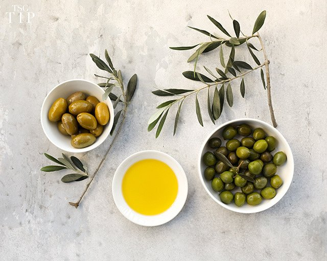
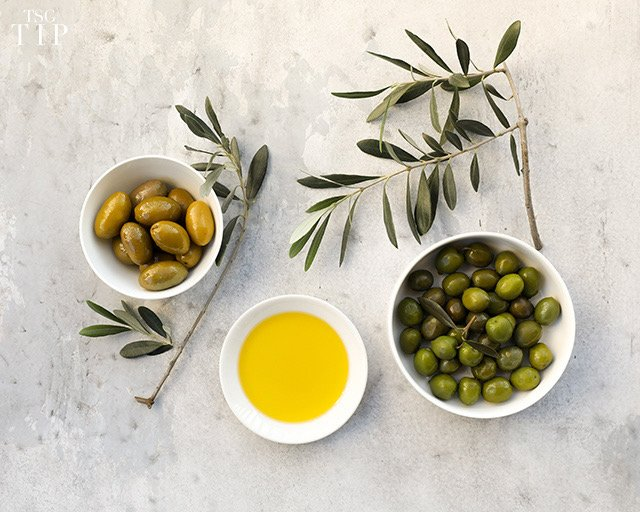
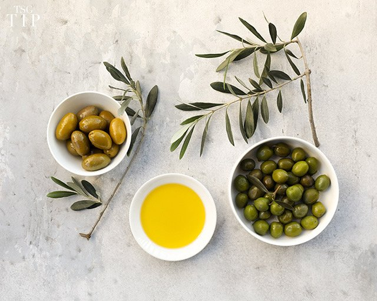

Step inside Kōbō, where Franco-Japanese elegance meets modern chocolaterie. Discover a sensorial journey defined by matcha, hojicha, and meticulous craftsmanship.
Explore our storyFrom Kyoto-sourced matcha to hojicha accents, every piece balances French savoir-faire with Japanese precision.
Premium cacao, yuzu, Madagascan vanilla, and seasonal sakura inspire limited releases crafted for connoisseurs.
Founded in 1996 by chef Antoine Hirashi, Kōbō was born from childhood afternoons spent pairing matcha tea with delicate sweets. That memory became the blueprint for a Franco-Japanese chocolate house.
Early collaborations with Parisian grand hotels set the tone: refined collections, discrete service, and bespoke creations for couture and haute gastronomy partners worldwide.
Rare matcha from Kyoto and Uji, single-origin cacao, Manuka honey, saffron, and yuzu anchor our supply chain—paired with eco-conscious, customizable packaging.
A participative, exacting culture values artisan training, calm workspaces, intercultural teams, and immersive tastings that connect people to the artistry behind each piece.

Witness the balance of French technique and Japanese minimalism that defines our atelier. From precision tempering to matcha infusion, every step honors the ingredients.
Experience more history, sourcing, and collaborations on our story page.
View full timeline